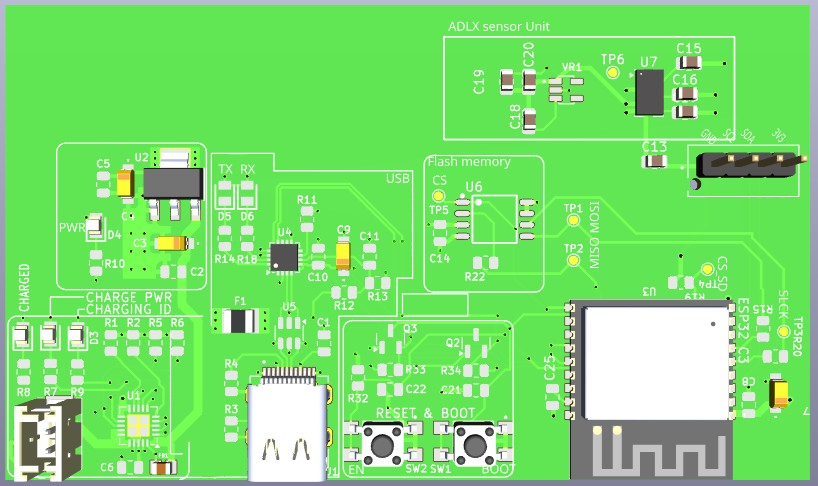
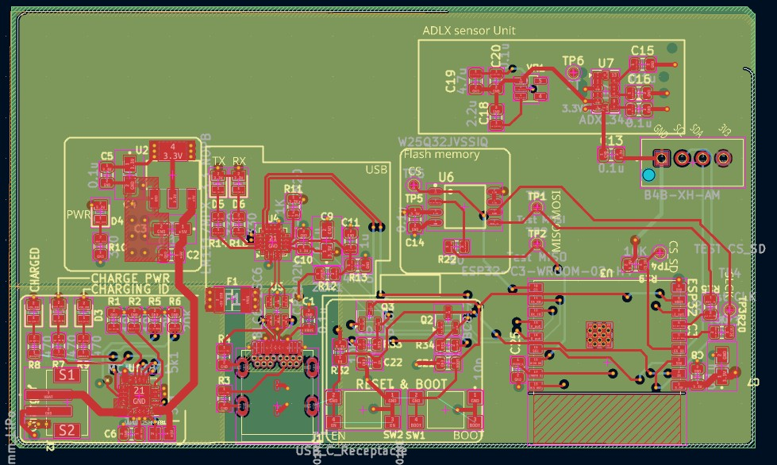

Building on the original ESP32‑based 4‑layer IoT development board, I integrated the ADXL335 analog accelerometer. This modification transforms the board into a compact, low‑power fall detection platform capable of real‑time motion analysis and threshold‑based event detection. The goal was to create a dedicated edge‑processing device suitable for safety wearables and industrial worker protection.

3D View

PCB Layout
The resulting design is simpler, more power‑efficient, and tailored specifically for motion and impact detection.
The ESP32‑C3 samples the ADXL335 outputs using its ADC channels. The firmware implements:
This enables real‑time fall detection entirely on the edge, without cloud dependency.
By combining the ESP32‑C3’s wireless capabilities with the ADXL335’s analog responsiveness, the system provides a reliable and efficient platform for safety‑focused IoT applications.